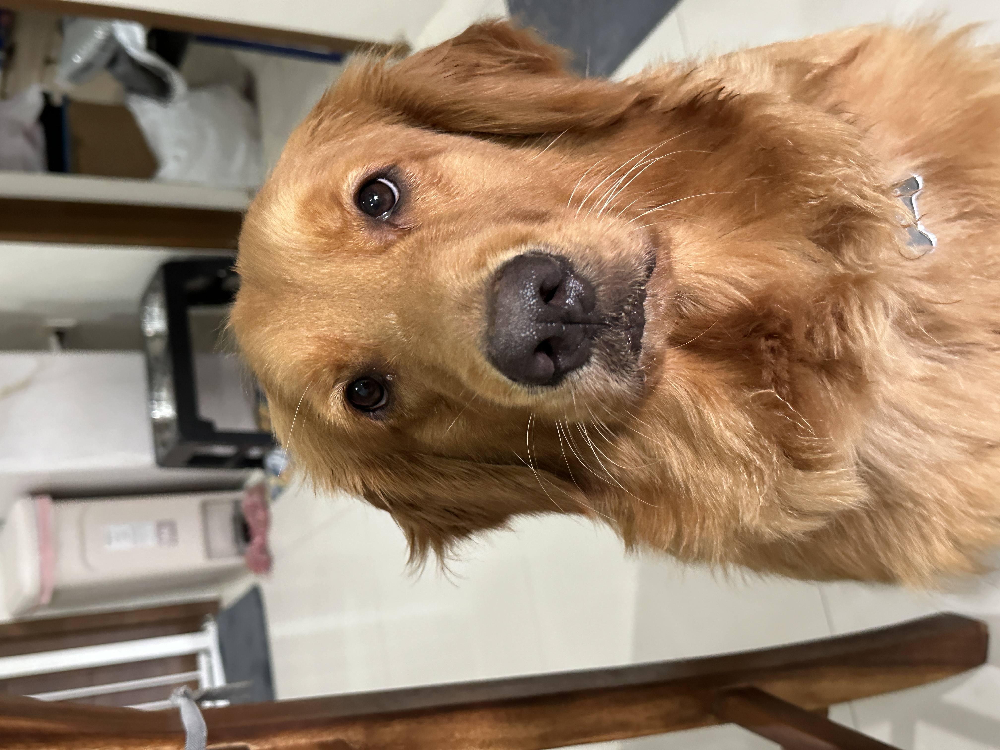
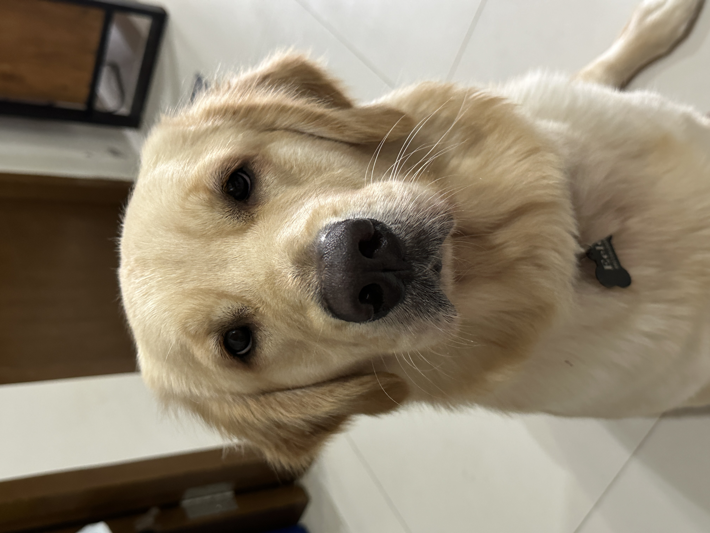
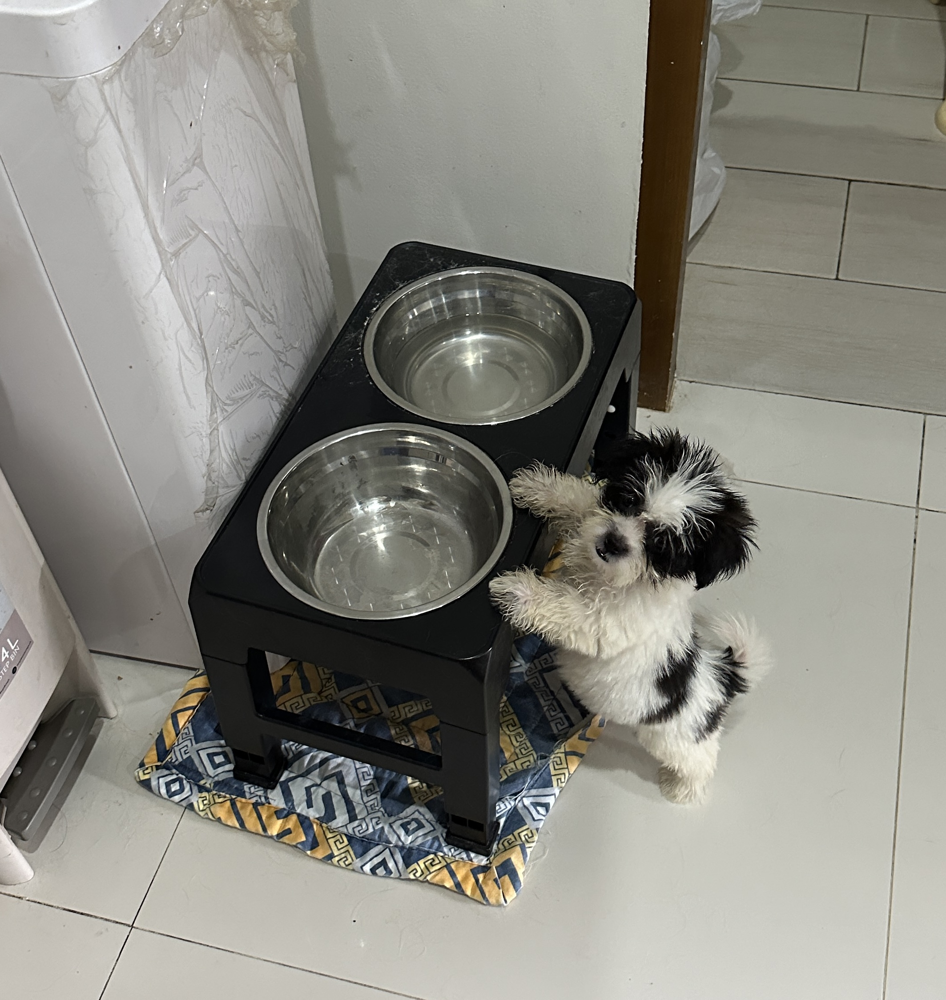

My name is Annalee Cruz. I was born January 3, 1982 which makes me 42 years old. I was born in the Philippines but half of my life I lived and worked in California, USA. I received my bachelors degree in Computer Science from AMA Computer University in the Philippines and bachelors degree in Technical Management focusing on Computer Networks from Devry University, Daly City, California. I have extensive experience in customer service in retail industry by holding varying job positions. I always wanted to work in the IT industry given that my educational background and make a career of it.
I'm currently live in the Philippines for over a year now and decided to move here permanently. I'm seeking career opportunities that will allow me to work from home that can foster growth and financial rewards. I'm highly motivated individual and not afraid to try new things. I welcome challenges and see it as learning tool to improve my self and skills. I love learning new things that can help me achieve my goals. I'm a team player and do my best to help my team ensure our team's success. I can also work as individual with minimal supervision.
In my sparetime, I tend to stay at home to relax with my 3 dogs, Eggnog, Eelo and Eden. Eggnog and Eelo are Golden Retrievers and Eden is a Shih Tzu. I attached some photos of them in this page. I'm a homebody by heart and my home is my sanctuary. I also love reading books as it allows me to explore explore and experience different emotions and places. I also love to travel and experience different culture and food. I believe traveling allows an individual to have an open heart and mind. My favorite sport is table tennis not many people know that it is a highly competitive sport. Playing table tennis allows me to relax and let go of the tensions from work or personal. The sport has taught me and still teaching me strategies, coordination and skills do matter just like in our professional careers as individuals.
You can learn more about their breed by clicking their photos.
  